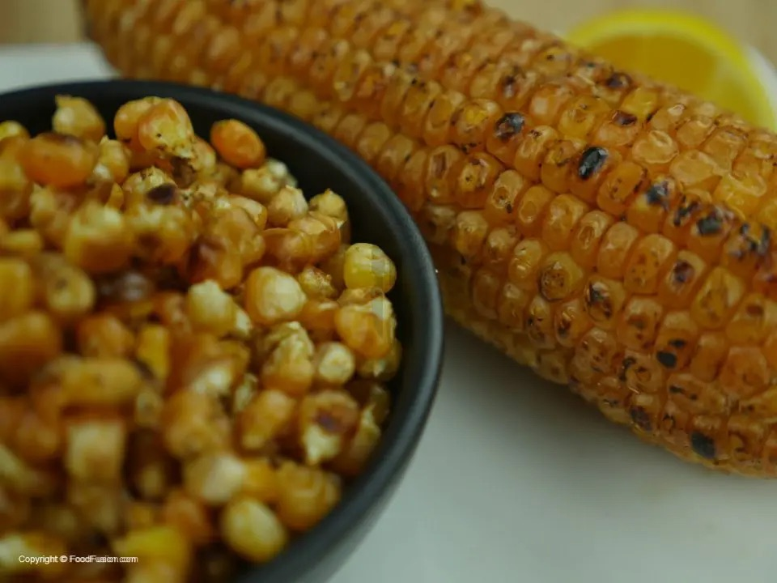

Chapati is a soft, flaky, chewy flatbread that can be enjoyed with curries as a main meal, and with tea or eggs for breakfast as well.

Bhajia is made of thin potato slices, coated in a spicy gram flour and deep-fried.

Maandazi is a pastry that can be enjoyed with tea as breakfast, tastes a lot like a doghnut, and looks a lot like beignet but is denser.

Maindi-Choma is maize roasted over charcoal and, once ready, is rubbed with chili and lemon salt.